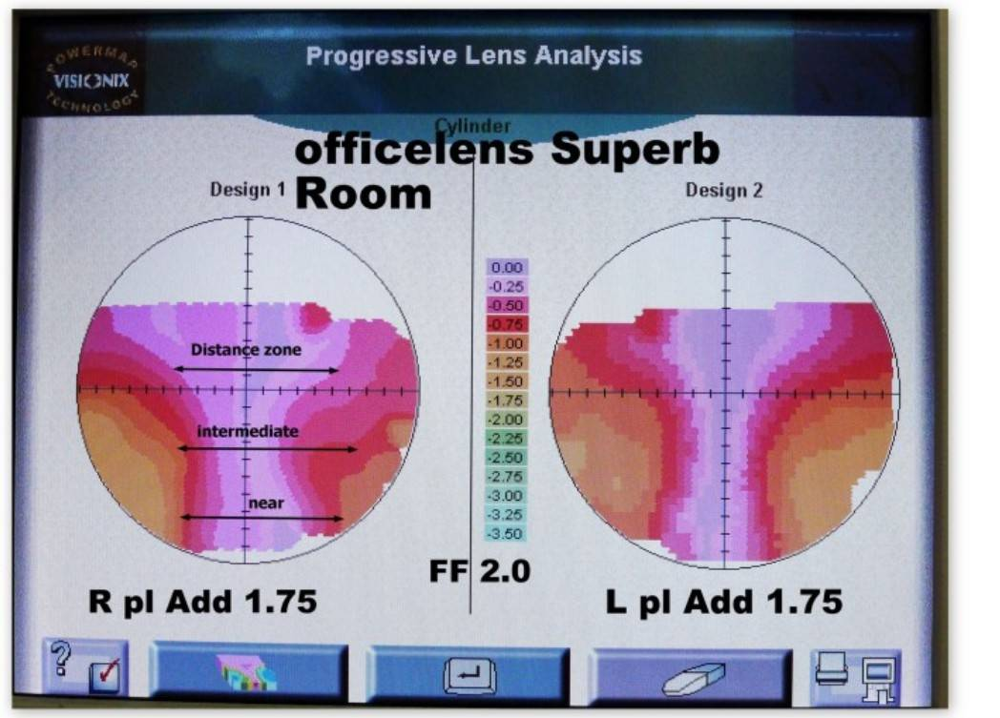
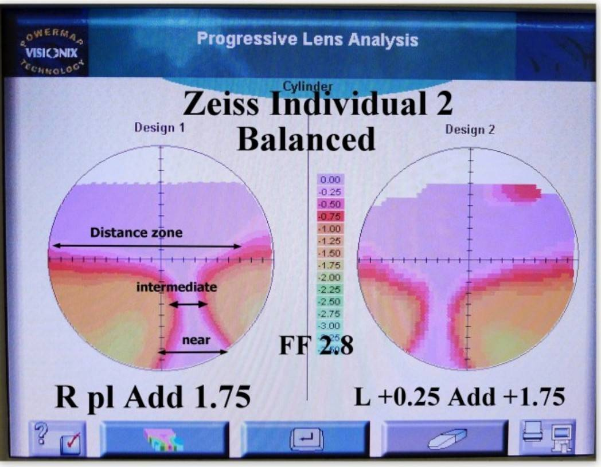
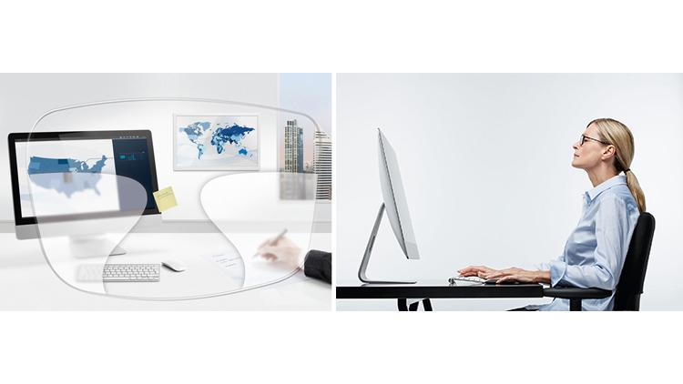
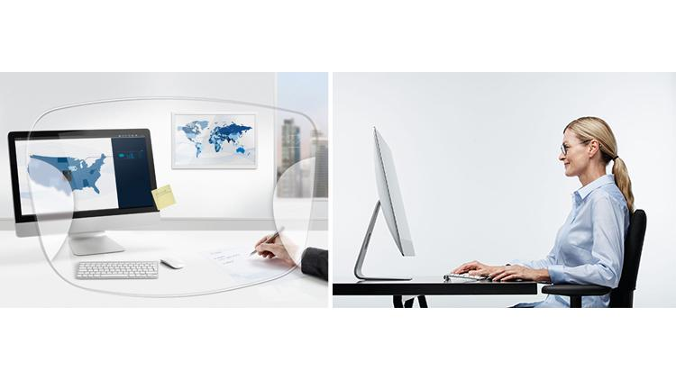

คนส่วนใหญ่คิดว่าแว่น Progressiveคำศัพท์ เลนส์ที่มีค่าสายตาเปลี่ยนแปลงอย่างต่อเนื่องจากบนลงล่าง — มองไกล กลาง ใกล้ ในเลนส์เดียว ไม่มีขีดแบ่งเหมือน Bifocal คู่เดียวจะทำได้ทุกอย่าง แต่ในความเป็นจริง ไม่มีเลนส์ Progressive ใดที่เก่งทุกระยะเท่ากัน — เพราะมันคือ "เกมของการแลกเปลี่ยน" ระหว่างโซนมองไกล กับโซนมองใกล้-กลาง
01 ปัญหาที่ซ่อนอยู่ — ใช้แว่น Outdoor ทำงานหน้าจอ
เลนส์ Progressive ทั่วไป (General-Purpose / Outdoor) ถูกออกแบบมาเพื่อให้ โซนมองไกลกว้างที่สุด เหมาะกับการขับรถ เดินเที่ยว มองป้าย แต่สิ่งที่แลกมาคือ โซน Intermediateคำศัพท์ ระยะกลาง ประมาณ 40–100 ซม. — เป็นระยะที่ใช้มองหน้าจอคอมพิวเตอร์ หรือคุยกับคนตรงข้าม และ Near Zoneคำศัพท์ โซนมองใกล้ ประมาณ 30–40 ซม. — ใช้อ่านหนังสือ มองมือถือ หรือเอกสาร จะแคบลง
เมื่อต้องนั่งทำงานหน้าจอ 6–8 ชม. ด้วยเลนส์แบบ Outdoor ผู้ใช้มักถูกบังคับให้ แหงนคอขึ้น เพื่อมองผ่านส่วนล่างของเลนส์ที่มีค่า Addition สำหรับระยะใกล้ ท่าทางแบบนี้สะสมไปเรื่อยๆ ทำให้เกิด Office Syndromeคำศัพท์ กลุ่มอาการปวดคอ บ่า ไหล่ จากการนั่งทำงานท่าเดิมนานๆ โดยเฉพาะหน้าจอคอมพิวเตอร์ — พบได้บ่อยในพนักงานออฟฟิศอายุ 40+ ปวดคอ ปวดบ่า ปวดหัว และตาล้าเร็วขึ้น
หลักฐานจากงานวิจัย
งานวิจัย Randomized Controlled Trial ที่ศึกษาพนักงานออฟฟิศ 35 คน พบว่าผู้ที่ใช้ Progressive ทั่วไปหน้าจอคอมพิวเตอร์มักมีองศาการเอียงศีรษะไปข้างหน้า (Forward Head Angle) มากกว่าผู้ที่ใช้เลนส์ Office อย่างมีนัยสำคัญ ทำให้เกิดแรงกดต่อกล้ามเนื้อ Trapezius และ Levator Scapulae ส่งผลให้ปวดคอสะสม
Bierma-Zeinstra et al., Environmental Health and Preventive Medicine (2017)
ท่าทางแหงนคอเกิดจากการใช้แว่น Outdoor ทำงานหน้าจอ
อาการปวดหัว ปวดตา จากการใช้เลนส์ Outdoor ทำงานหน้าจอเป็นเวลานาน
02 เลนส์ Progressive Indoor คืออะไร?
เลนส์ Progressive Indoor (หรือ Occupational Progressive Lensคำศัพท์ เลนส์ Progressive ที่ออกแบบเฉพาะสำหรับระยะทำงาน — ขยายโซนกลางและโซนใกล้ให้กว้างขึ้น แลกกับการตัดโซนไกลออกไป ครอบคลุมระยะประมาณ 40 ซม. ถึง 2–4 เมตร ) ถูกออกแบบมาเพื่อ "ขยายโซนมองกลาง-ใกล้ให้กว้างที่สุด" โดยลดหรือตัดโซนมองไกลออกไป
แนวคิดง่ายๆ คือ — ถ้าคุณใช้เวลา 60–70% ของวันอยู่ในห้อง ทำไมไม่ใส่เลนส์ที่ "เชี่ยวชาญ" ระยะใน? แทนที่จะทนใช้เลนส์ Outdoor ที่ดีเรื่องไกล แต่ไม่ถนัดเรื่องใกล้-กลาง
04 Case Study Review — Zeiss Officelens vs Zeiss Individual 2
📋 Case Study — Evershine Optical, Singapore
ลูกค้าที่ใช้ทั้ง Officelens และ Individual 2
ร้าน Evershine Optical ในสิงคโปร์ได้แชร์กรณีศึกษาที่น่าสนใจ — ลูกค้ารายหนึ่งเป็นผู้ใช้ Zeiss Officelens มาก่อนและพอใจมาก ต่อมาต้องการแว่นสำหรับเล่นกอล์ฟ จึงได้รับเลนส์ Zeiss Individual 2 Progressive เพื่อใช้งานกลางแจ้ง
ผลจากการทดสอบด้วย Lens Analyzerคำศัพท์ เครื่องมือวัดเลนส์แบบดิจิทัลที่แสดงแผนที่ค่า Power และ Aberration ของเลนส์ Progressive ทำให้เห็นโซนชัด-โซนเบลอได้อย่างชัดเจน พบว่า:
Officelens มีโซน Intermediate-Near ที่กว้างกว่าอย่างชัดเจน และมี Aberrationคำศัพท์ ความบิดเบี้ยวของภาพที่เกิดจากโครงสร้างเลนส์ Progressive — ยิ่ง Aberration น้อย ยิ่งสบายตา โดยเฉพาะบริเวณขอบเลนส์ (ความเบี้ยว) น้อยกว่ามาก ในขณะที่ Individual 2 มีโซน Distance ที่กว้างมากแทบไม่มี Distortion เลย แต่โซน Near-Intermediate แคบกว่าและมีความเบี้ยวที่ขอบมากกว่า
ลูกค้าท่านนี้รู้สึกได้ชัดว่า เลนส์ Outdoor ให้มุมมองไกลยอดเยี่ยม แต่เมื่อมองใกล้-กลาง ไม่สามารถเทียบ Officelens ได้ สรุปคือ: เลนส์ Progressive แม้ดีที่สุดก็ไม่สามารถทำงานที่ไม่ได้ถูกออกแบบมาให้ทำได้
ที่มา: Evershine Optical, Singapore (2015) — Zeiss Officelens vs Zeiss Individual 2 comparison using Rotlex lens analyzer

Zeiss Officelens — โซนกลาง-ใกล้กว้าง, Aberration ต่ำ

Zeiss Individual 2 (Add 1.75) — โซนไกลกว้าง แต่ใกล้แคบกว่า
05 ทำงานเร็วขึ้น ผิดพลาดน้อยลง — งานวิจัยบอกอะไรบ้าง?
29%
เพิ่ม Productivity
80%
ลดอาการ
38%
ลดอาการปวดคอ
งานวิจัยสนับสนุน
ลดปวดคอ 38% & ตาล้า 45%: งานวิจัยของ Jaschinski W. และคณะ ศึกษาเปรียบเทียบเลนส์ Progressive ทั่วไปกับเลนส์ Office ในสำนักงานจริง พบว่าเลนส์ Office สามารถลดอาการปวดคอได้ 38% (p=0.004) และลดอาการตาล้าได้ 45% (p=0.002) อย่างมีนัยสำคัญทางสถิติ
Jaschinski W, et al. — Comparison of progressive addition lenses for general purpose and for computer vision: an office field study. Clinical and Experimental Optometry, 2015; 98(3): 234-243.
Digital Eye Strain กับ Productivity
65% ของพนักงานออฟฟิศมีอาการ Digital Eye Strain — และ 40% รู้สึกเหนื่อยล้าอย่างน้อยครึ่งหนึ่งของเวลาทำงาน ส่งผลให้เกิดข้อผิดพลาดในงานมากขึ้น และ Productivity ลดลง
รายงานจาก VSP Vision Care ปี 2026 พบว่าพนักงานที่มีอาการ Digital Eye Strain มี Productivity ลดลงเฉลี่ย 18.6% หรือเทียบเท่า 7.4 ชั่วโมงต่อสัปดาห์ — เกือบเท่ากับเสียวันทำงานไป 1 วันเต็ม
Presbyopia Physician (2024); VSP Vision Care Workplace Vision Health Report (2026)
สายตาเอียง + แว่นไม่เหมาะ = Error เพิ่ม 370%
งานวิจัย double-masked randomised study พบว่า สายตาเอียงที่ไม่ถูกแก้ไขเพียง 1.00–2.00 D สามารถเพิ่มข้อผิดพลาดในการทำงานหน้าจอได้สูงถึง 370% และลด Productivity ของพนักงานคอมพิวเตอร์ลงอย่างมีนัยสำคัญ
Rosenfield M, et al. — Digital eye strain: prevalence, measurement and amelioration. BMJ Open Ophthalmology, 2018.
Office Syndrome กับเลนส์ Progressive — เกี่ยวกันอย่างไร?
งานวิจัยจาก FREMAP ร่วมกับ Xsens Motion Capture พบว่าผู้ใช้เลนส์ Progressive ทั่วไปหน้าคอมพิวเตอร์มีการ แอ่นคอเกินขีดจำกัด Ergonomic อย่างสม่ำเสมอ เนื่องจากต้องก้มมองผ่านส่วนล่างของเลนส์ ท่าทางนี้สะสมจนเกิดอาการปวดคอ บ่า ไหล่ ซึ่งเป็นอาการหลักของ Office Syndrome
การเปลี่ยนมาใช้เลนส์ Indoor ที่มีโซนกลาง-ใกล้กว้าง ช่วยให้ผู้ใช้มองหน้าจอได้ในท่าที่เป็นธรรมชาติ ลดการแหงนคอ ลดแรงกดที่กล้ามเนื้อ Trapezius — เป็นหนึ่งในวิธีป้องกัน Office Syndrome ที่มักถูกมองข้าม

เลนส์ Progressive Outdoor — ต้องแหงนคอมองผ่านโซนล่าง

เลนส์ Office — อยู่ในท่าธรรมชาติได้ ลดอาการปวดคอ
06 ตารางเปรียบเทียบ Outdoor vs Indoor
คุณสมบัติ
🌏 Outdoor
🖥️ Indoor
โซนมองไกล
★★★★★ กว้างมาก✗ ไม่มี / จำกัดมาก
โซนมองกลาง (จอคอม)
★★ แคบ★★★★★ กว้างมาก
โซนมองใกล้ (อ่านหนังสือ)
★★½ ปานกลาง★★★★★ กว้างมาก
ขับรถ
✓ ใช้ได้✗ ห้ามใช้!
ทำงานหน้าจอ 6+ ชม.
△ ไม่เหมาะ✓ เหมาะมาก
ลด Neck Strain
ต่ำ สูง (ลดได้ ~38%)
Adaptation Period
1–2 สัปดาห์
สั้นกว่า
Distortion ขอบเลนส์
ปานกลาง
น้อยมาก
ระยะใช้งาน
ทุกระยะ
~40 ซม. – 2–4 ม.
07 คำแนะนำจาก Optical X
ที่ Optical X Vision Care Center เราแนะนำระบบ "2 คู่" สำหรับผู้ที่ต้องการคุณภาพการมองเห็นสูงสุด:
คู่ที่ 1 — Progressive Outdoor สำหรับขับรถ เดินทาง กิจกรรมกลางแจ้งคู่ที่ 2 — Progressive Indoor สำหรับทำงานออฟฟิศ อ่านหนังสือ ใช้คอมพิวเตอร์
ด้วยห้องตรวจ 6 เมตร, เลนส์ทดลอง Progressive มากกว่า 60 ตัว, และประสบการณ์เฉพาะทางเลนส์ Progressive — เราสามารถ Demo ให้เห็นความแตกต่างจริงก่อนตัดสินใจ ไม่ต้องเดาว่าเลนส์ไหนจะเหมาะ
📚 เอกสารอ้างอิง
Sheedy JE, Hardy RF. The optics of occupational progressive lenses. Optometry 2005;76(8):432-441. (PubMed PMID: 16150410)
Jaschinski W, König M, Mekontso TM, Ohlendorf A, Welscher M. Comparison of progressive addition lenses for general purpose and for computer vision: an office field study. Clinical and Experimental Optometry 2015;98(3):234-243.
Bierma-Zeinstra et al. The impact of different lenses on visual and musculoskeletal complaints in VDU workers. Environmental Health and Preventive Medicine 2017;22:34.
Rosenfield M. Digital eye strain: prevalence, measurement and amelioration. BMJ Open Ophthalmology 2018;3(1):e000146.
Willford CH et al. The interaction of wearing multifocal lenses with head posture and pain. J Orthop Sports Phys Ther 1996;23(3):194-199.
VSP Vision Care. Workplace Vision Health Report 2025-2026.
FREMAP / Xsens. Ergonomic Impact of Progressive Lenses in the Workplace. 2024.
Beeson D, Wolffsohn JS, et al. Digital eye strain symptoms worsen during prolonged digital tasks, associated with a reduction in productivity. Contact Lens and Anterior Eye 2024.
Evershine Optical, Singapore. Comparison between Zeiss Officelens and Zeiss Individual 2 progressive lens. 2015.